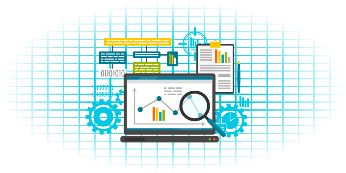
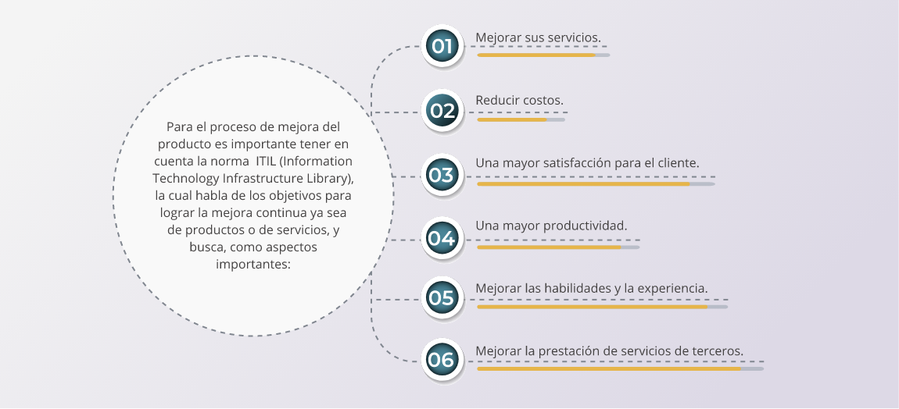
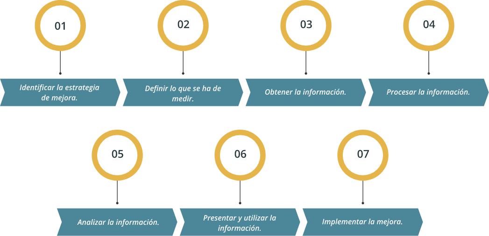

1. Software
1.1. Definición
Se define software como “el conjunto de componentes lógicos que hacen posible la realización de tareas específicas” (Carmona Romera, 2017).
Tomando como base esta definición y su aplicación en el área de la confección, será de gran utilidad el conocimiento y dominio de herramientas tecnológicas que permitan mejorar la productividad en los procesos de diseño y confección de modas, tales como, procesadores de texto, hojas electrónicas, presentaciones ejecutivas y bases de datos, junto con el conocimiento y dominio del ciberespacio y herramientas colaborativas.
Para consultar más información acerca del tema acceder al libro sistema operativo, búsqueda de información: Internet/Intranet y correo electrónico Página 16-17.
Ibarra Sixto, J. I. (2013). Manual sistema operativo, búsqueda de la información: Internet/intranet y correo electrónico (S. L. Editorial CEP (ed.)). Editorial CEP, S.L.
1.2 Clasificación
En el campo de las TIC se encuentran diferentes tipos de software de acuerdo con la función que realizan, bien sea en la administración de los recursos del computador o en las aplicaciones que el usuario necesite para el desempeño de su trabajo.
Según (Gómez de Silva Garza & Ania Briseño, 2008), el software de sistema está constituido por los programas que se encargan del control y administración de los recursos de cómputo y los que permiten la interacción entre los usuarios y los sistemas de aplicación o el hardware.
Ejemplos de este tipo de software son los traductores (compiladores, intérpretes y ensambladores) y los sistemas operativos como Windows, XP o Vista, y varias versiones de Unix, por ejemplo, AIX de IBM. En la actualidad se cuenta con versiones más actualizadas como son Android, IOS, Windows 10, que funcionan inclusive en equipos móviles, generando mayor rendimiento en los dispositivos.
El software o sistemas de aplicación son los programas que permiten a una computadora realizar actividades específicas de procesamiento de información y ofrecer una funcionalidad a los usuarios finales. (Gómez de Silva Garza & Ania Briseño, 2008).
Ejemplo de este tipo de software son los editores o procesadores de texto como Word, hojas de cálculo como Excel, presentaciones ejecutivas como Power Point y antivirus como McAfee o Avast entre otros.
El software de programación permite a determinados usuarios, la comunicación con la máquina o dispositivo, para el desarrollo de aplicaciones que facilitan el manejo de la información y con ello la toma de decisiones; también se denominan lenguajes de programación.
Los lenguajes de programación se clasifican en tres niveles, alto, medio y bajo de acuerdo con su comprensión y cercanía con la máquina o dispositivo. El nivel bajo, se denomina lenguaje de máquina y es utilizado para la creación y administración del software del sistema o sistema operativo y el nivel más alto es utilizado por los programadores en la creación de aplicaciones comerciales o científicas.
EL software de programación se presenta a través de Entornos Integrados de Desarrollo (IDE), que ofrecen la posibilidad de construir aplicaciones para diferentes ambientes como la Web y/o dispositivos móviles. Algunos ejemplos de IDE son Netbeans, Eclipse y otros conocidos como editores de programación, entre los cuales se encuentran Visual Studio, Sublime Text, Brackets, Atom. Etc.
2. Internet
Antes de definir internet es importante mencionar ¿Cómo surgió internet?, es decir contar su historia, la cual “comienza a finales de los años 60 en Estados Unidos y se relaciona con un proyecto desarrollado por la Agencia de Proyectos de Investigación Avanzados ((ARPA) y el Departamento de Defensa estadounidense, que definieron el protocolo TC/IP con la finalidad de conectar ordenadores para facilitar trabajos sobre investigación” (Valentín López, 2015).
Ahora se puede responder la pregunta, ¿Qué es la internet?, son “ordenadores conectados entre sí a través de redes o sistemas de comunicación que interconectan distintos tipos de dispositivos, con la finalidad de compartir información y ofrecer distintos servicios tales como correo electrónico, transferencia de ficheros vía FTP o acceso a la World Wide Web” (Valentín López, 2015).
Para consultar más información acerca del tema acceder al libro Ofimática, página 61-71.
Valentín López, G.M. (2015). Ofimática (S. L. Editorial CEP (ed.)). Editorial CEP, S. L.
3. Ofimática
3.1 Introducción a la ofimática
En la oficina es necesario agilizar y automatizar los procesos, con el objetivo de mejorar la productividad y con ello la competitividad. Por esta razón, la ofimática se convierte en factor primordial para la gestión de la información y la reducción de tiempos de respuesta en los procesos que antes se realizaban de manera manual.
Es importante conocer las herramientas informáticas más usadas en la oficina, tanto las de uso bajo licencia, como el caso de Office de la empresa Microsoft, como las de uso libre, como el caso de LibreOffice, OpenOffice, etc.
Para consultar más información acerca del tema acceder al libro Ofimática, página 32.
Valentín López, G.M. (2015). Ofimática (S. L. Editorial CEP (ed.)). Editorial CEP, S. L.
3.2 Funcionalidad de los sistemas operativos
Los sistemas operativos son el corazón de los dispositivos informáticos, es decir: “realizan la gestión del hardware del equipo informático y la supervisión de la ejecución de los programas.” (Valentín López, 2015, p. 32). Además, estos cumplen diferentes funciones dentro del equipo, como son:
Gestionar los recursos del ordenador, los cuales son:
La CPU (microprocesador) que maneja los programas en ejecución y las instrucciones a ejecutar.
La memoria principal (RAM), de lectura y escritura, gestionando su ocupación y asignación para cada proceso.
Los distintos dispositivos de almacenamiento secundario (discos duros, discos ópticos, etc.). Esto implica el control de los archivos en estos dispositivos.
Los demás periféricos del sistema, tanto de entrada (teclado, ratón, etc.) como de salida (monitor, impresoras, etc.), así como los sistemas de telecomunicaciones.
Gestionar los procesos en ejecución, es decir, los distintos programas y tareas que se encuentran en proceso. El sistema operativo es el responsable de crear, mantener, detener temporalmente o finalizar esos procesos, asignando los recursos necesarios de CPU, RAM, etc. También debe detectar y controlar los posibles conflictos, por ejemplo, si dos programas intentan escribir en la misma posición de memoria. Además, el sistema operativo debe ser capaz también de planificar las tareas correctamente, por ejemplo, asignando más recursos a los programas que ralenticen el sistema.
Controlar la seguridad del sistema en todo momento, comprobando que todos los sistemas funcionan correctamente. (Ibarra Sixto, 2013, págs. 26-27).
Para consultar más información acerca del tema acceder al libro Ofimática, página 33.
Valentín López, G.M. (2015). Ofimática (S. L. Editorial CEP (ed.)). Editorial CEP, S. L.
Para consultar aún más información acerca del tema acceder al libro sistema operativo, búsqueda de información: Internet/Intranet y correo electrónico.
Ibarra Sixto, J. I. (2013). Manual sistema operativo, búsqueda de la información: Internet/intranet y correo electrónico (S. L. Editorial CEP (ed.)). Editorial CEP, S.L.
3.3 Herramientas ofimáticas: procesador de texto, hoja de cálculo, presentación de diapositivas, gestores de bases de datos
Existen herramientas ofimáticas como procesadores de texto, hojas de cálculo, presentaciones ejecutivas y gestores de base de datos muy utilizadas por las empresas de la confección, para optimizar la gestión de la información y los datos mejorando la productividad. Para su estudio se recomienda la metodología de trabajo del autor (Naranjo González, 2010), enfocada en procesos de trabajo con énfasis en la formación para el empleo.
Para consultar más información acerca del tema acceder al libro “Cuaderno del alumno: ofimática avanzada para formación continua. Formación para el empleo”.
Naranjo González, M. R. (2010). Cuaderno del alumno: ofimática avanzada para formación continua. Formación para el empleo. Editorial CEP, S.L.
Para consultar más información acerca del tema sobre procesador de texto, acceder al siguiente material complementario, de libre acceso:
Para consultar más información acerca del tema sobre hojas de cálculo, acceder al siguiente material complementario, de libre acceso:
Para consultar más información acerca del tema sobre presentación con diapositivas, acceder al siguiente material complementario, de libre acceso:
3.4 Motores de búsqueda, páginas sociales
Desde los años 90 cuando se popularizó el internet nacieron los motores de búsqueda o buscadores, programas informáticos para la búsqueda de información en el ciberespacio. Entre los buscadores más populares se encuentra el Netscape, con aparición en el año 1994 y el de Google, que aparece en el año 1998, convirtiéndose en uno de los más populares.
Asociado a estos cambios, entre los años 2002 y 2004, surgen las redes sociales o también conocidas como páginas sociales, que permiten el desarrollo del concepto de aldea virtual. Entre las redes sociales más conocidas, a lo largo de la historia, se tiene My Space, Friendster, Facebook y hoy en día Instagram.
Para consultar más información acerca del tema acceder al libro “Sistema operativo, búsqueda de la información: internet/intranet y correo electrónico UF0319”, página 101-106.
Ladrón, de Guevara, Miguel Ángel. Sistema operativo, búsqueda de la información: internet/intranet y correo electrónico UF0319 (2a. ed.), Editorial Tutor Formación, 2018. ProQuest E-book Central.
Para consultar más información acerca del tema acceder al libro ¿Cómo funciona Internet?, página 33-55.
Fresno, Chávez, Caridad. ¿Cómo funciona Internet?, El Cid Editor, 2018. ProQuest E-book Central.
3.5 Herramientas de trabajo colaborativo
Con el avance de las Tecnologías de la Información y la Comunicación (TIC) han aparecido una gran cantidad de herramientas en la Web, que se pueden clasificar en diferentes ejes temáticos, tales como herramientas para presentaciones, herramientas para gestión de videos, herramientas para compartir y comunicar, herramientas para organizar ideas, como mapas conceptuales y mapas mentales, herramientas para evaluaciones en línea, entre otras. Una de ellas, que aporta significativamente al desarrollo de actividades grupales en el ciberespacio, es la de trabajo colaborativo, por lo cual se presenta su definición y funciones principales.
Las herramientas de trabajo colaborativo son soluciones informáticas para apoyar el trabajo en grupo de varios usuarios. Incorporan funciones para publicar documentos en espacios compartidos, enviar correos electrónicos, participar en foros de discusión, mantener listas de contactos, agendas compartidas, etc. Las herramientas de colaboración (inicialmente conocidas como groupware) permiten la gestión de documentos y contenidos circunscritos al grupo de usuarios que necesitan compartir esa información. (Eíto-Brun, 2014, p. 49).
Para consultar más información acerca del tema acceder a la página Web, 10 herramientas de trabajo colaborativo para tu empresa
Grupo Bancolombia. (2018, 30 octubre). 10 herramientas de trabajo colaborativo para tu empresa.
Para consultar más información acerca del tema herramienta colaborativa Trellos, acceder al siguiente material complementario de libre acceso:
4. Evaluación
Sin duda alguna la evaluación es una de las etapas fundamentales en el desarrollo de proyectos porque permite identificar, cuantificar y valorar el impacto de los resultados, bajo el criterio de costo y beneficio. Por tal razón, las herramientas informáticas se convierten en un apoyo fundamental en la etapa de evaluación, porque generan estadísticas e informes compilados y consolidados que facilitan visualizar los resultados y la toma de decisiones.
4.1 Reportes
Según (española & Madrid, 1970), un reporte puede ser un informe o una noticia. Este tipo de documento (que puede ser impreso, digital, audiovisual, etc.) tiene como objetivo presentar una información, normalmente compilada y estadística que contextualice una situación o el resultado de un proyecto. En este sentido, las herramientas informáticas como por ejemplo procesadores de texto, presentaciones ejecutivas y las hojas electrónicas, facilitan la elaboración de textos, presentaciones con elementos multimediales, cuadros con fórmulas de todo tipo y gráficos estadísticos que permiten visualizar de una manera eficiente el resultado de un proyecto.
4.2 Análisis informático
En este punto, es importante el manejo de herramientas informáticas, como Excel, que permite realizar análisis informático, a través de procesos estadísticos, tales como, análisis de varianzas, coeficiente de correlación, estadística descriptiva, suavización exponencial, análisis de regresión, muestras e histogramas, entre otras.
Para consultar más información acerca del tema análisis de datos en Excel, acceder al siguiente material complementario de libre acceso:
Para consultar más información acerca del tema toma de tiempos y eficiencia en producción acceder al siguiente material complementario de libre acceso:
En otro aspecto, cuando se habla de auditoría, en especial de los sistemas se deben mencionar como temas importantes, la redundancia, el ruido y la entropía.
Ruido
Según (Mamani et al.), “en primer lugar, se debe considerar como comunicación:
La transferencia de información del emisor al receptor de manera que este la comprenda.
El ruido es todo aquello que interfiere en una adecuada comunicación; no solamente los sonidos sino todo aquello que impida la adecuada comunicación”.
Por ejemplo, si en la casa la niña se encuentra jugando silenciosamente y otra persona se encuentra hablando en una conferencia o presentación, se considera ruido, debido a la distracción que genera la niña para el sistema.
Redundancia
Se le llama redundancia, toda aquella duplicidad que tiene el sistema. Los sistemas con redundancia son aquellos en los que se repiten los datos o hardware de carácter crítico para asegurarlos ante cualquier posible fallo que pueda surgir por su uso continuo. Sin embargo, se debe definir con claridad su estructura o funcionamiento, para no caer en duplicidades innecesarias de información, que terminen en inconsistencias.
Entropía
Según (española & Madrid, 1970), la entropía es definida como: “Magnitud termodinámica que mide la parte de la energía no utilizable para realizar trabajo y que se expresa como el cociente entre el calor cedido por un cuerpo y su temperatura absoluta”. En otras palabras, la entropía hace referencia a las fallas o inconvenientes de los elementos del sistema que pueden afectar el funcionamiento de este. Si se toma como ejemplo un sistema de producción de una empresa industrial, la entropía se podría presentar por fallas en las máquinas por falta de mantenimiento, insumos de mala calidad u operarios sin capacitación para el manejo de su puesto de trabajo.
Todo lo anterior se debe tener en cuenta a la hora de analizar los reportes entregados, en cuanto al análisis del ruido o sea las interferencias, la redundancia que se pueda dar en los reportes y la entropía hablando en términos de la energía desaprovechada.
5. Mejora continua
La mejora continua en la empresa es una técnica que se utiliza para la gestión de procesos de negocio, centrados en la continua necesidad de revisar los procesos en busca de posibles problemas, como obstáculos y retrasos, para resolverlos y lograr una mayor eficiencia y productividad de las operaciones.
5.1 Optimización
Después de haber realizado la evaluación de los procesos que se han trabajado, se deben tomar decisiones que serán cruciales para la organización, es decir buscar las mejores opciones para lograr la mejora continua. Además, teniendo en cuenta la afirmación de optimización en procesos, mencionada por (Vergara, 2005, p. 202), como la que “permite estudiar la forma de reducir los costos en el proceso de fabricación; mejorar la calidad del producto; minimizar la variabilidad del proceso; ajustar la respuesta de la variable en estudio lo más cerca de un valor objetivo o a una norma; obtener productos más robustos, etc.
5.2 Mejora del producto
Desde el punto de vista de la informática, la calidad es súper importante y mucho más cuando después de haber presentado la evaluación se encontraron hallazgos negativos. Por tal motivo la optimización apunta a la mejora del producto para poder cumplir con todas las expectativas del mismo. Además, teniendo en cuenta que “esta es la fase en la que se determinan e implantan las soluciones para que el proceso alcance los resultados esperados” (Vergara, 2005, p. 136).
La norma ITIL menciona los pasos que se deben tener en cuenta para su aplicación, que según (S.L., 2019), son:
Para consultar más información acerca de la norma ITIL acceder al siguiente material complementario de libre acceso:
Glosario
CAD:sigla de Diseño Asistido por Computador, son herramientas para computadores que permiten crear, modificar, analizar y optimizar diseños.
CPU:sigla de la expresión inglesa Central Processing Unit, 'unidad central de proceso', que es la parte de una computadora en la que se encuentran los elementos que sirven para procesar datos.
Hardware:es la parte física de un ordenador o sistema informático. Está formado por los componentes eléctricos, electrónicos, electromecánicos y mecánicos, tales como circuitos de cables y luz, placas, memorias, discos duros, dispositivos periféricos y cualquier otro material en estado físico que sea necesario para hacer que el equipo funcione.
Informática:conjunto de conocimientos científicos y técnicas que hacen posible el tratamiento automático de la información por medio de computadoras.
ITIL:Information Technology Infrastructure Library, corresponde a una metodología de gestión que propone una serie de prácticas estandarizadas que nos ayudan a mejorar la prestación de un servicio, reorganizando la manera que tiene la empresa de trabajar y en particular, la del departamento de tecnologías de información.
LibreOffice:es un paquete de software de oficina libre y de código abierto desarrollado por The Document Foundation.
Microsoft:es una compañía tecnológica multinacional con sede en Redmond, Washington, EE.UU. Microsoft es el acrónimo de microcomputer y software
Ofimática:automatización, mediante sistemas electrónicos, de las comunicaciones y procesos administrativos en las oficinas.
OpenOffice:es una suite ofimática libre, de código abierto, que incluye procesador de textos, hoja de cálculo, presentaciones, herramientas para el dibujo vectorial y base de datos.
Periférico:aparato auxiliar e independiente conectado a la unidad central de una computadora.
RAM:sigla de Random Access Memory (‘memoria de acceso aleatorio’), memoria principal de la computadora, donde residen programas y datos, sobre la que se pueden efectuar operaciones de lectura y escritura.
Sistema operativo:es el conjunto de programas informáticos que permite la administración eficaz de los recursos de una computadora es conocido como sistema operativo o software de sistema. Estos programas comienzan a trabajar apenas se enciende el equipo, ya que gestionan el hardware desde los niveles más básicos y permiten además la interacción con el usuario.
Software:conjunto de programas, instrucciones y reglas informáticas para ejecutar ciertas tareas en una computadora.
TIC:son el conjunto de tecnologías desarrolladas en la actualidad para una información y comunicación más eficiente, las cuales han modificado tanto la forma de acceder al conocimiento como las relaciones humanas.
WWW:son las iniciales que identifican a la expresión inglesa World Wide Web, el sistema de documentos de hipertexto que se encuentran enlazados entre sí y a los que se accede por medio de internet. A través de un software conocido como navegador, los usuarios pueden visualizar diversos sitios web (los cuales contienen texto, imágenes, videos y otros contenidos multimedia) y navegar a través de ellos mediante los hipervínculos.
Material complementario
| Nombre del documento o material. | Tipo de material. | Enlace del Recurso. |
|---|---|---|
| AMR Education, (2015). Ejemplo práctico de toma de tiempos y eficiencia en producción. | Vídeo | Descargar |
| Ibiza David, (2019). Tutorial Trellos: Guía de uso con ejemplos reales prácticos. | Video | Descargar |
| Gallardo Yoney, (2020). Word para principiantes – 2020. | Video | Descargar |
| Ibiza David, (2020). Curso básico de Excel – Completo 2020. | Video | Descargar |
| Gallardo Yoney, (2018). Curso de Power Point 2019 – Completo. | Video | Descargar |
| Grupo Bancolombia. (2018, 30 octubre). 10 herramientas de trabajo colaborativo para tu empresa. | Página web | Descargar |
| Escuela al revés UNLINE, (2019). Análisis de datos para la toma de decisiones con Excel. | Video | Descargar |
Referencias bibliográficas
AMR Education, (2015). Ejemplo práctico de toma de tiempos y eficiencia en producción. YouTube.https://www.youtube.com/watch?v=6VDzbpRIF9M&feature=youtu.be
Andrade, A. M., Del Río, C. A., & Alvear, D. L. (2019). A study on time and motion to increase the efficiency of a shoe manufacturing company | Estudio de Tiempos y Movimientos para Incrementar la Eficiencia en una Empresa de Producción de Calzado. Información Tecnológica, 30(3), 83–94.https://doi.org/10.4067/S0718-07642019000300083
Carmona Romera, G. (2017). Sistema operativo, búsqueda de información: Internet/Intranet y correo electrónico (I. Editorial (ed.); 1st ed.).
CertCampus, (2016). ITIL Ciclo de vida. YouTube.https://www.youtube.com/watch?v=qLSk1Ctl51I
Eíto-Brun, R. (2014). Gestión de contenidos (Universitat Oberta de Catalunya (ed.); Vol. 17). Editorial UOC.
Escuela al revés UNLINE, (2019). Análisis de datos para la toma de decisiones con Excel. YouTube.https://www.youtube.com/watch?v=Ds-cTahAN2A
Española, R. A., & Madrid, E. (1970). Diccionario de la lengua española (Vol. 19). Espasa-Calpe.
Fresno, Chávez, Caridad. ¿Cómo funciona Internet?, El Cid Editor, 2018. ProQuest E-book Central. https://elibro-net.bdigital.sena.edu.co/es/ereader/senavirtual/36728?page=34
Gallardo Yoney, (2018). Curso de Power Point 2019 – Completo. YouTube.https://www.youtube.com/watch?v=ra0hKJv8zbw
Gallardo Yoney, (2020). Word para principiantes – 2020. YouTubehttps://www.youtube.com/watch?v=-4ooZlyprmc
Gaskin, S. (2014). GO! Microsoft Word 2013 (1st ed.). Pearson Educación.
Gómez de Silva Garza, A., & Ania Briseño, I. de J. I. B.-978-970-686-768-1 I. B.-978-607-481-064-6 (Eds.). (2008). Software (pp. 23–44). Cengage Learning.https://link.gale.com/apps/doc/CX3004400004/GVRL?u=sena&sid=GVRL&xid=d8990326
Grupo Bancolombia. (2018, 30 octubre). 10 herramientas de trabajo colaborativo para tu empresa. https://www.grupobancolombia.com/wps/portal/negocios/actualizate/tendencias/herramientas-trabajo-colaborativo
Ibarra Sixto, J. I. (2013). Manual sistema operativo, búsqueda de la información: Internet/intranet y correo electrónico (S. L. Editorial CEP (ed.)). Editorial CEP, S. Lhttps://elibro-net.bdigital.sena.edu.co/es/ereader/senavirtual/50724?page=19
Ibiza David, (2019). Tutorial Trellos: Guía de uso con ejemplos reales prácticos. YouTube.https://www.youtube.com/watch?v=_UB44coH3SM&feature=youtu.be
Ibiza David, (2020). Curso básico de Excel – Completo 2020. YouTube.https://www.youtube.com/watch?v=pVbeetji9vg
Ladrón, de Guevara, Miguel Ángel. Sistema operativo, búsqueda de la información: internet/intranet y correo electrónico UF0319 (2a. ed.), Editorial Tutor Formación, 2018. ProQuest E-libro.Https://elibro-net.bdigital.sena.edu.co/es/lc/senavirtual/titulos/44263
Mamani, O., Arohuanca, M., Mamani, W., Quiñonez, C., Muñoz, M., & Pocohualca, N. (n.d.). Auditoria informática. In Informatica (pp. 1–6).
Naranjo González, M. R. (2010). Cuaderno del alumno: ofimática básica para formación continua. Formación para el empleo. Editorial CEP, S.Lhttps://elibro-net.bdigital.sena.edu.co/es/ereader/senavirtual/50987?page=1
Servicetonic. (2019). ITIL, Mejora continua del servicio.https://www.servicetonic.com/es/itil/8-itil-mejora-continua-del-servicio
Valentín López, G.M. (2015). Ofimática (S. L. Editorial CEP (ed.)). Editorial CEP, S. L.https://elibro-net.bdigital.sena.edu.co/es/ereader/senavirtual/51049?page=16
Vergara, P. (2005). Optimización de Procesos Industriales y Control de Calidad. Pedro Vergara Vera. I.S.B.N: 956-7359-45-8. Ediciones Universidad Tecnológica.
Fotografías y vectores tomados de https://www.shutterstock.com/ y https://www.freepik.es/
Licencia Creative Commons
CC BY-NC-SA
Ver licencia.